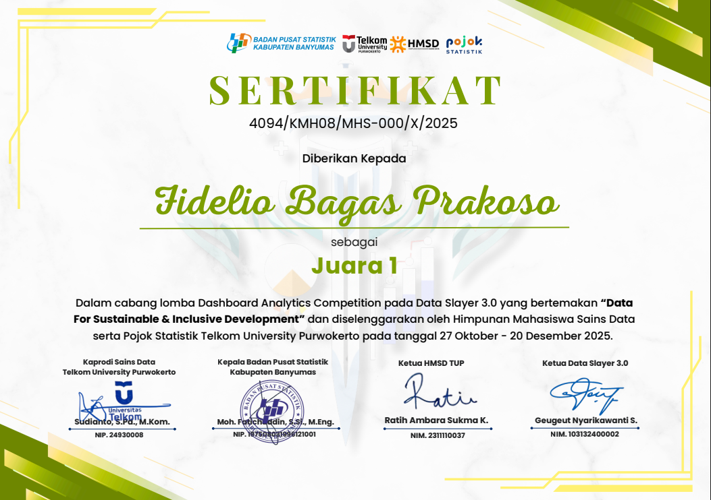
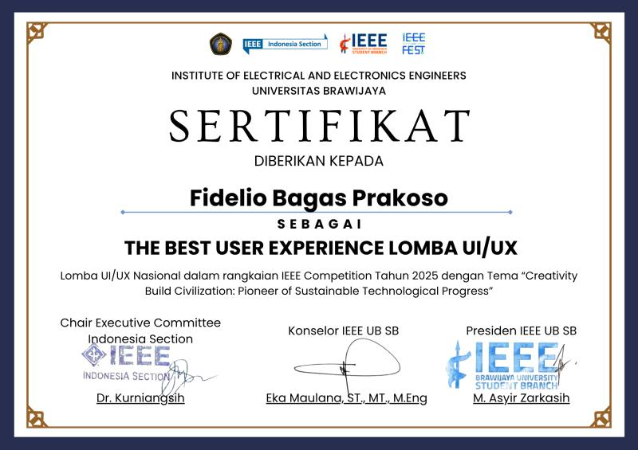
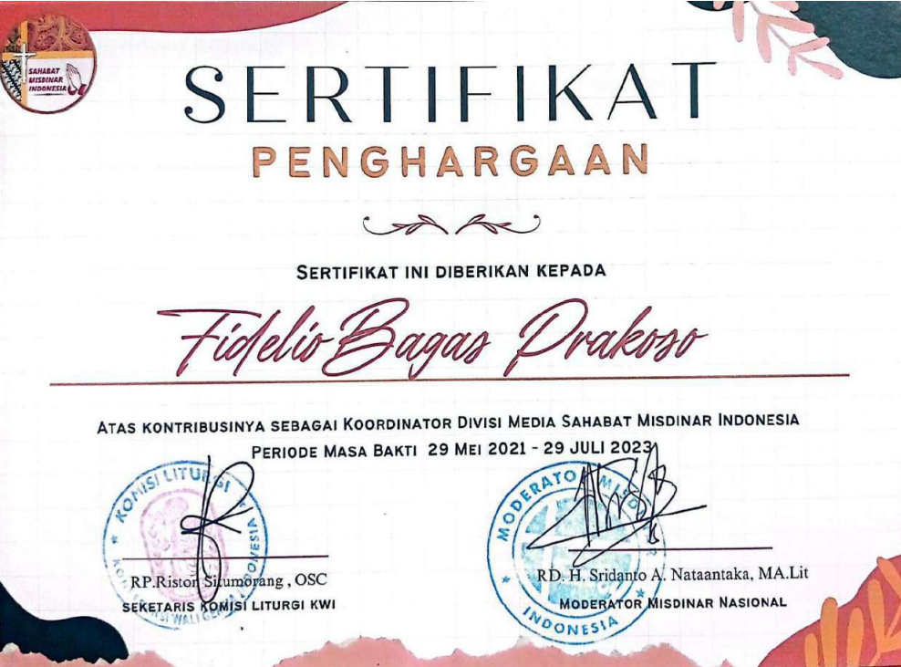

Certified Skills

Competition Certificate
INDEEP Dashboard — 1st Place Winner
Awarded 1st Place in the National Data Analytics Competition for developing INDEEP (Indonesia Economic Disparity Explorer) — an interactive dashboard built from BPS Susenas data (2019–2024) to visualize poverty and inequality across Indonesia.
Issued Dec 2025

Competition Certificate
Best User Experience — UI/UX Competition
Awarded Best User Experience at the UI/UX National Competition held by IEEE Universitas Brawijaya, for delivering a user-centered design that emphasizes cognitive psychology, interaction principles, and usability.
Issued Oct 2025

Organization Certificate
Media Division Coordinator — Sahabat Misdinar Indonesia
Recognized for contributing as Media Division Coordinator at Sahabat Misdinar Indonesia, overseeing media coordination and supporting national-level discussion programs and public engagement initiatives.
Issued Jul 2023